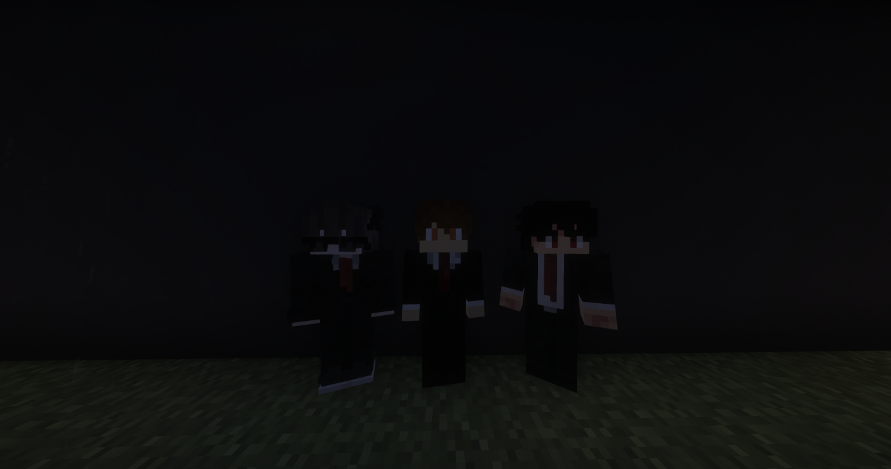

Derrière l'Encre : Le Karmine Déchaîné vous présente son équipe
Trois frères, une vision et une seule ambition : informer le territoire avec honnêteté, indépendance et passion.

Le Karmine Déchaîné fait aujourd'hui ses premiers pas avec sa toute première édition. Mais derrière chaque article, chaque enquête et chaque scoop, se cache une équipe soudée qui partage une même conviction : une information libre vaut plus que tous les coffres d'or du territoire.
Aujourd'hui, la rédaction ouvre exceptionnellement ses portes afin de vous présenter ceux qui font vivre ce journal chaque jour avec passion, détermination et quelques nuits blanches au passage.
👨👨👦 Les Frères Bodin : Le cœur du journal
Le Karmine Déchaîné, c'est avant tout une affaire de famille. Trois frères, une vision commune et une seule ambition : vous informer avec honnêteté et sans filtre.
Paul Bodin — L'aîné et le pilier de la rédaction. Rigoureux et posé, il veille à la ligne éditoriale du journal et s'assure que chaque publication soit digne des exigences du Karmine Déchaîné.
Lucas Bodin — Le moteur créatif du trio. Curieux, vif et toujours à l'affût du moindre scoop, il est souvent le premier à courir sur le terrain lorsque l'actualité s'enflamme.
Kévin Bodin — Le touche-à-tout de l'équipe. Polyvalent, toujours motivé et rarement loin d'une idée improbable, il assure la cohésion du groupe et met la main à la pâte peu importe la mission.
"Notre encre n'est pas à vendre. Notre indépendance est notre plus grande richesse."
— Les frères Bodin
✊ Un journal 100% indépendant
Le Karmine Déchaîné ne répond à personne d'autre qu'à ses lecteurs. Aucune guilde, aucun marchand et aucun pouvoir politique ne dicte nos mots ni n'influence nos décisions éditoriales.
Ce que vous lisez ici, c'est la vérité telle que nous la voyons : sans compromis, sans censure et sans pression extérieure. Cette liberté, nous la considérons comme un devoir envers chaque citoyen du territoire.
🌐 Retrouvez-nous en ligne
Vous souhaitez relire une ancienne édition, suivre les dernières annonces ou découvrir nos prochaines enquêtes ? Le Karmine Déchaîné disposera très bientôt de son propre espace en ligne où seront archivés tous nos articles.
Au nom de toute la rédaction, Paul, Lucas et Kévin Bodin remercient chaque lecteur pour sa confiance et son soutien depuis le premier jour. Cette aventure est autant la vôtre que la nôtre.
"Informer, c'est résister. Le Karmine Déchaîné continuera, quoi qu'il arrive."
— La Rédaction
— Le Karmine Déchaîné, votre source d'information sur le territoire. Vérité, courage, encre.